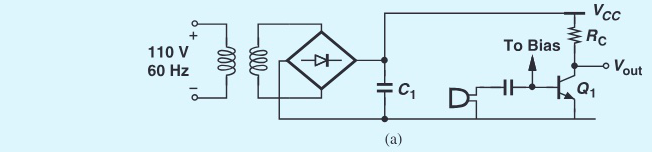

정류기 전원 CE 단에서 V_CC → V_out 소신호 이득 (리플 영향)
주어진 조건
- 출력의 리플 영향을 계산하기 위해 $V_{CC}$를 소신호 "입력"으로 볼 수 있음
- $V_A < \infty$ (Early 효과 고려)
- 소자 값은 주어지지 않음 (답은 기호로)
- 베이스 바이어스 전압은 $V_{CC}$ 리플의 영향을 받지 않음
구할 것
- $V_{CC}$에서 $V_{out}$까지의 (소신호) 이득

원문 보기
To calculate the effect of ripple at the output of the circuit in Fig. 10.1, we can assume $V_{CC}$ is a small-signal "input" and determine the (small-signal) gain from $V_{CC}$ to $V_{out}$. Compute this gain, assuming $V_A < \infty$.
문제를 내 말로 읽어요
리플은 전원에 얹힌 작은 흔들림이에요. 그림의 마이크 입력은 0으로 두고 $V_{CC}$만 살짝 움직여 출력이 얼마나 따라가는지 구해요. 베이스 바이어스 전압은 전원 리플의 영향을 받지 않는다고 주어졌어요. 소자 값이 없으니 답은 기호로 써요.
이 문제를 봤을 때 떠올릴 개념과 공식
“$V_{CC}$를 소신호 입력으로”라는 단서에서는 중첩(superposition)을 떠올려요. 다른 독립 입력은 0으로 만들지만 조사 중인 전원 리플 $v_{cc}$는 남겨야 해요. $V_A<\infty$이므로 $r_o\simeq V_A/I_C$라는 유한 출력저항(output resistance)이 있어요.
이미터와 베이스가 AC 접지이면 $v_{be}=0$이고 제어 전류원 $g_mv_{be}$는 0이에요. 따라서 트랜지스터는 출력에서 접지로 연결된 $r_o$만 남아요. 이 회로는 반전 CE 신호 이득이 아니라 저항 분압(voltage division) 문제가 돼요.
종이에 적는 실제 첫 줄
$v_{cc}$만 소신호 전원으로 남기고, 마이크 입력과 베이스 바이어스는 AC 접지로 보내요. $Q_1$은 $g_mv_{be}$와 $r_o$로 바꿔요. 이미터도 접지라 $v_{be}=0$이에요.
그림의 세 화살표처럼 $v_{out}$에서 나가는 전류를 모두 더해 0으로 놓아요. 위 가지는 $(v_{out}-v_{cc})/R_C$, 제어 전류원은 $g_mv_{be}$, 아래 가지는 $v_{out}/r_o$예요.
$$\frac{v_{out}-v_{cc}}{R_C}+g_mv_{be}+\frac{v_{out}}{r_o}=0,\qquad v_{be}=0$$
왜 이렇게 푸는지 함께 따라가요
풀이
$v_{be}=0$이라 가운데 항이 사라져요. 출력 노드 위 경로의 끝은 0 V가 아니라 조사하려는 입력 $v_{cc}$예요.
$$\frac{v_{out}-v_{cc}}{R_C}+\frac{v_{out}}{r_o}=0$$
$v_{out}$이 든 항을 왼쪽에 모아요.
$$v_{out}\left(\frac1{R_C}+\frac1{r_o}\right)=\frac{v_{cc}}{R_C}$$
양변을 $v_{cc}$와 총 컨덕턴스로 나누어요.
$$\frac{v_{out}}{v_{cc}}=\frac{1/R_C}{1/R_C+1/r_o}=\frac{r_o}{R_C+r_o}$$
전원이 올라가면 위 저항 끝이 올라가 출력도 올라가므로 양의 이득이에요. 보통 $r_o\gg R_C$라서 이 비는 1에 가까워요. 베이스가 전원 리플의 영향을 받지 않는다는 조건 덕분에 $g_mv_{be}$ 항이 0이 된 것이에요.
완성 답과 검산
풀이
$v_{out}/v_{cc}=r_o/(R_C+r_o)$예요. 저항끼리의 비라 무차원이고 0과 1 사이예요. $r_o\to\infty$이면 이득이 1이 돼요. 이때 컬렉터 전류는 변하지 않으므로 $R_C$의 전압강하도 변하지 않아 출력이 전원을 그대로 따라가요. $r_o\to0$이면 출력이 접지에 고정돼 이득은 0이에요.
이 문제의 함정
모든 전원을 AC 접지로 바꾸는 습관 때문에 $v_{cc}$까지 없애면 구하려는 입력을 지운 것이에요. $-g_mR_C$는 베이스에서 출력까지의 이득이라 여기에 쓰지 않아요.
설명을 닫고 다시 풀어요
- $r_o=20R_C$이면 $v_{out}/v_{cc}$는 얼마일까요? 1보다 큰지 작은지 먼저 판단해 보세요.
- 베이스 바이어스를 $V_{CC}$에서 저항 분압으로 만들어 베이스 소신호 전압이 $v_b=kv_{cc}$($0<k<1$)로 따라간다면, 첫 KCL의 어느 항이 0이 아니게 되고 이득은 어떻게 바뀔까요?
베이스 바이어스가 리플과 독립이라 $v_{be}=0$이에요. 조사 중인 $v_{cc}$는 남기고 $v_{out}/v_{cc}=r_o/(R_C+r_o)>0$를 구해요.
떠올릴 개념·공식
전원 리플의 중첩·분압
첫 줄
vout 노드 KCL, vbe=0
핵심 판단
gm vbe=0, ro만 남음
검산
ro→∞이면 이득 1